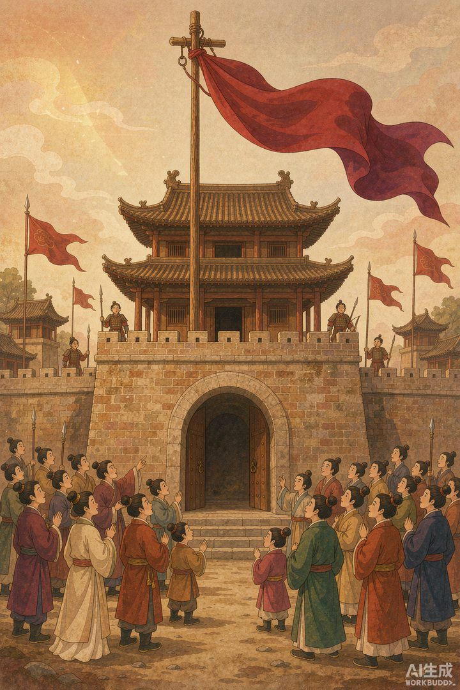
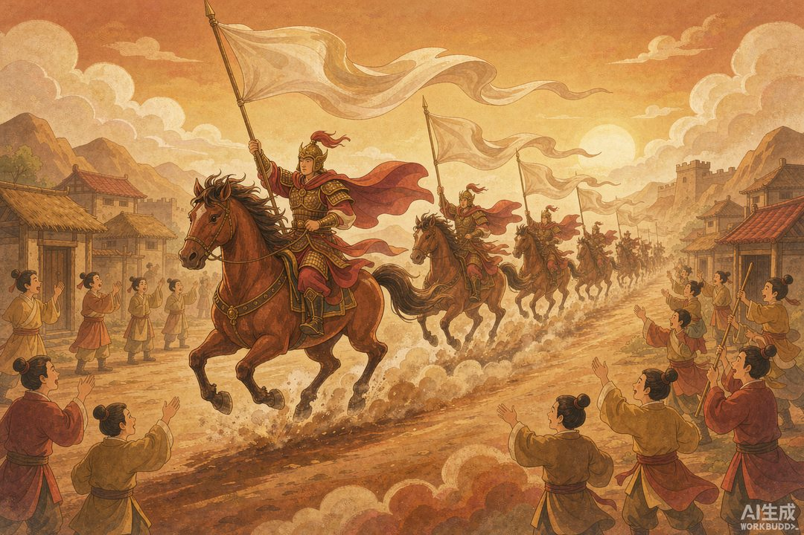
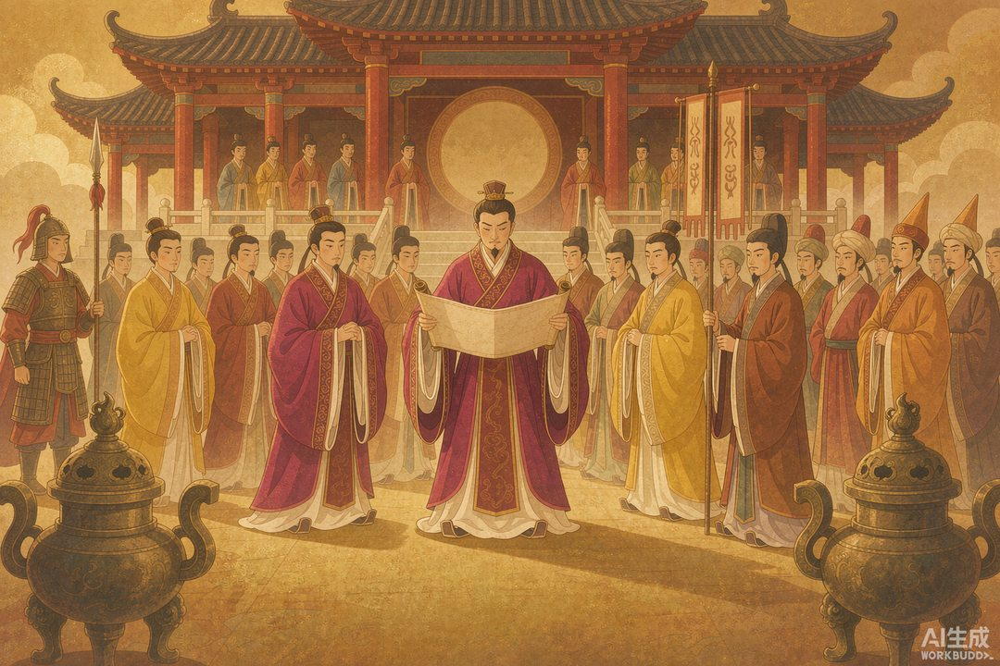

|
《信息传播那些事儿》卷二 · 竹简与封泥 · 第 22 篇 |
|
汉唐布告与露布：胜利要挂在城墙上 —— 信息不仅要传得快，还要传得响 |
|
 |
|
城门口那面高高挂起的帛书，就是古代版"头条推送"（AI 生成示意图） |
|
驿站解决的是"递得快"，但它有个盲区：公文是写给某个人看的，路过的一万个老百姓，什么也看不见。可帝国的统治恰恰需要被围观——打了大胜仗，如果只有皇帝和兵部知道，那这仗等于白打。于是古人发明了一种写给一万个人看的信息载体。 |
一 | 布告天下：统治需要被看见 |
汉代皇帝的诏书里，有一个固定结尾，四个字，气势很大："布告天下，咸使闻知"——这份文件，要让天下每一个人都知道。
怎么做到"咸使闻知"？靠的是各级官府的公开张贴。汉代诏书分两类走两条路：常规文书用玺印封缄，走驿站层层传递；而大赦、赎罪这类普惠性政令，则"露布下州郡"——不加封检，直接公开张贴。刘勰在《文心雕龙》里说得很透："露版以宣众，不可使义隐。"公开文书是给群众看的，不能让它藏着掖着。
为什么大赦天下偏要公开？因为大赦的价值就在"被知道"：让每个在押的犯人、每个惶惶不安的家属当天就听到好消息，帝国的恩典才能立刻兑换成人心。一句"咸使闻知"，其实是最高统治者对传播效果的硬性要求——政令的价值，取决于它触达了多少人。
这套做法延续两千年，从汉代帛书榜文，到唐宋以后县衙门口张贴的榜文告示，再到明清的牌坊、碑刻，本质都是同一件事：在交通靠走、通信靠吼的年代，把文字立在人流最密的地方。
|
 |
|
信使举着帛旗一路飞驰，本身就是一场移动的新闻发布（AI 生成示意图） |
二 | 露布：挂在竹竿上的头条 |
把公开传播玩到极致的，是一种叫"露布"的东西。
顾名思义，"露"就是不加封缄，"布"就是公布——露而不封，欲四方速知。它最早写在木板上（所以也叫"露板"），后来改写在丝帛上，高高挂在一根漆过的长竿顶端，由信使快马举着，一路招摇。唐代封演在《封氏闻见记》里解释："露布，捷书之别名也。诸军破贼，则以帛书建诸竿上。"
新闻史学界给过它一个极高的评价：古代报纸出现之前，时效性和公开性最强的传播媒介。想想那个画面：前方打了大胜仗，捷报写上帛书，绑在竿顶，信使举着它纵马狂奔——每经过一个村庄、一座城门，竿上那面帛旗就是一次头条推送，围观群众自动完成一轮转发。
露布上写什么？战果、立功将领的名字、被俘的敌军首领、该惩处的叛将名单。立功者的名字要写上去——这是最原始的"荣誉公示"；敌酋的名字也要写上去——这是最原始的"震慑公示"。一条帛旗，同时完成了激励与恐吓两组推送。
三 | 倚马可待：一场文笔军备竞赛 |
因为要公开传播、要鼓舞士气，露布对文笔的要求高得离谱——它得在马背上写，还必须写得漂亮。
三国时马超起兵，劫持文人贾洪给自己写露布。文章传到中原，司徒钟繇一眼认出："此贾洪作也。"——露布写得有个人风格，到可以被隔着几百里"指纹识别"的程度。
南朝更有名的桥段：《世说新语》记载，桓温北征急需一份露布文，叫来才子袁宏，让他靠着马背现场写。袁宏手不辍笔，俄得七纸——笔不停，一会儿就是七张纸，文辞可观。成语"倚马可待"，说的就是这位"马背上的冲刺写手"。
《周书》里还有位吕思礼，沙苑之战报捷，"命为露布，食顷便成"——一顿饭的功夫交稿。写捷报成了武将文人们的竞技场，慢了丢人，写得平庸更丢人。
到隋唐，露布干脆成了国家典礼。隋开皇九年（589 年）平定陈朝，按礼部新定的《宣露布仪》，在朝堂之上集合百官公开宣读捷报；到了唐代，"宣露布"正式列入军礼，《新唐书》把整个流程写得明明白白：兵部侍郎奉上露布，文武百官和外国使节列队肃立，中书令站定宣读——捷报进门之前，先是一场庄重的国家级新闻发布会。
|
 |
|
唐代"宣露布"军礼：中书令当众宣读捷报，百官与外国使节列队听宣（AI 生成示意图） |
四 | 一则露布，一篇眼泪 |
露布能有多大威力？讲一个真事。
唐德宗在位时，泾原兵变，皇帝被赶出长安，流亡在外，帝国眼看要完。直到大将李晟率军收复长安，捷报以露布的形式送来。据记载，读到这面帛旗上的消息时，唐德宗当场落泪。
一份军事文书，让九五至尊读出眼泪——因为那面挂在竿顶的帛旗上，写的不是文字，是"江山还在"四个字。
回过头看，本篇的知识点其实一句话：胜利需要被广播，才真正成为胜利。战场上的赢只是一半，另一半要靠城门口那面帛旗、朝堂上那场宣读、集市上那轮围观来完成。信息传播从来不只是"送达"，还有"到达时的仪式感"——古人挂帛旗，今人开发布会，内核是同一件事。
而与此同时，在欧亚大陆的另一端，罗马人也想通了同样的道理。只不过他们的做法更"重"——把公告直接刻在金属和石头上，摆在广场正中央，全体公民免费围观。下一站，罗马。
本篇数字锚点 |
|
7 张纸 袁宏倚马作露布 |
一顿饭 吕思礼沙苑之捷写露布用时 |
|
|
589 年 隋平陈后首行"宣露布仪" |
784 年 李晟收复长安露布传来 |
|
下篇预告 · 第 23 篇 《罗马每日纪闻：刻在石头上的报纸》——同一时代的罗马人走得更远：把元老院决议和每日新闻写在涂白的木板上，摆在广场，公民免费阅读。这可能是世界上最古老的"官方公报"。它为谁服务，又为谁而停？ |
史料参考：《史记》《文心雕龙·檄移》《世说新语·文学》《周书·吕思礼传》《封氏闻见记》《新唐书·礼乐志》；本文配图为 AI 生成示意图。